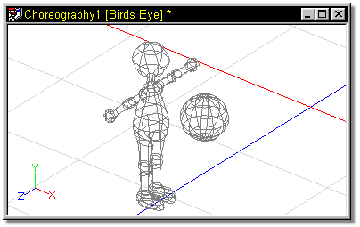
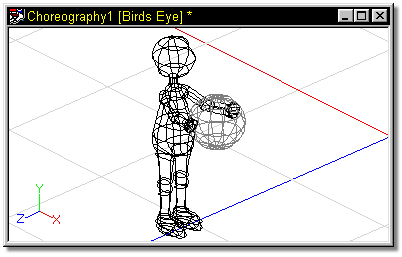

The “Translate To” constraint will reposition the constrained object to the
location of the target bone by forcing a bone to snap to the location of another
bone. The pivot / origin of the bone is considered it’s position. This
constraint supports blending with other adjacent translate constraints. This type of
constraint would be very useful for putting a ball into a character’s hand, or a
hat on his head.
The “Translate To” constraint will reposition the constrained object to the
location of the target bone by forcing a bone to snap to the location of another
bone. The pivot / origin of the bone is considered it’s position. This
constraint supports blending with other adjacent translate constraints. This type of
constraint would be very useful for putting a ball into a character’s hand, or a
hat on his head.

This example shows a character standing with a sphere floating in front of him.

Two Characters in a Choreography window
To make the character grab the sphere, “Translate To” constraints were applied to each hand.

Character with hands “Translated To” sphere and forearms kinematically constrained to the hands.
Tell Me About:
About Constraints
"Aim At" Constraints
"Kinematic" Constraints
"Path" Constraints
"Orient Like" Constraints
"Aim Roll At" Constraints
"Spherical Limits" Constraints
Blending Constraints
Constraint Order
Animating Constraints
Targets
Circular Constraints